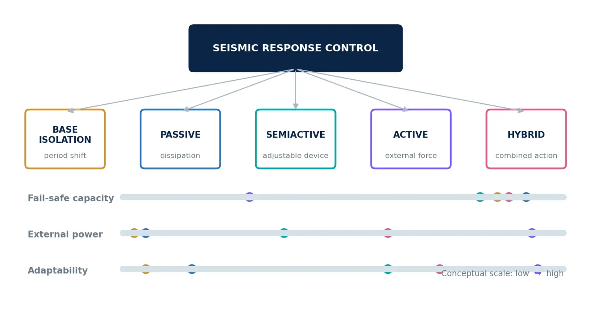
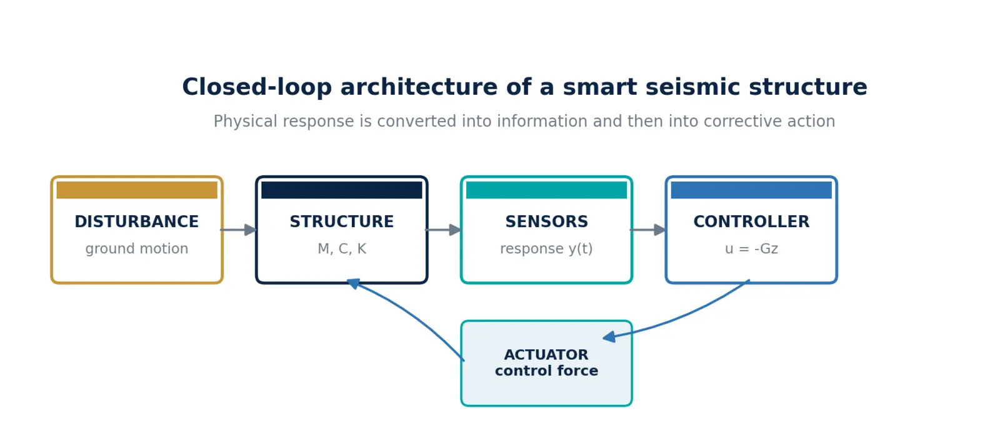
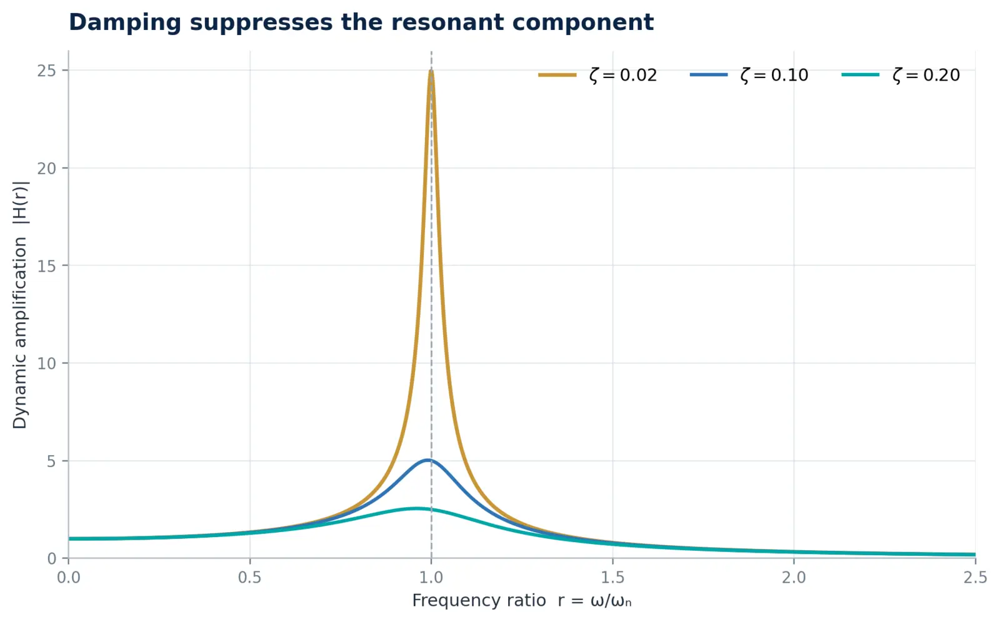
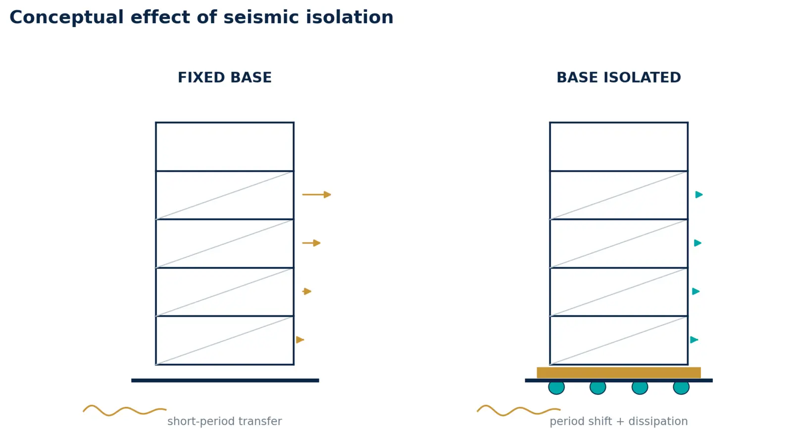
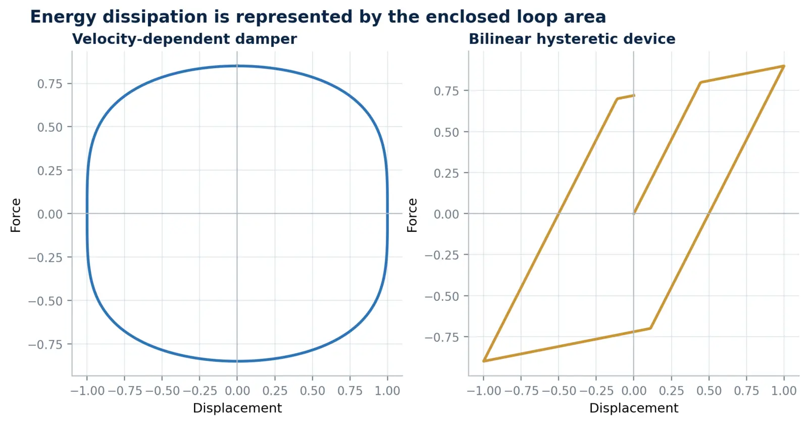
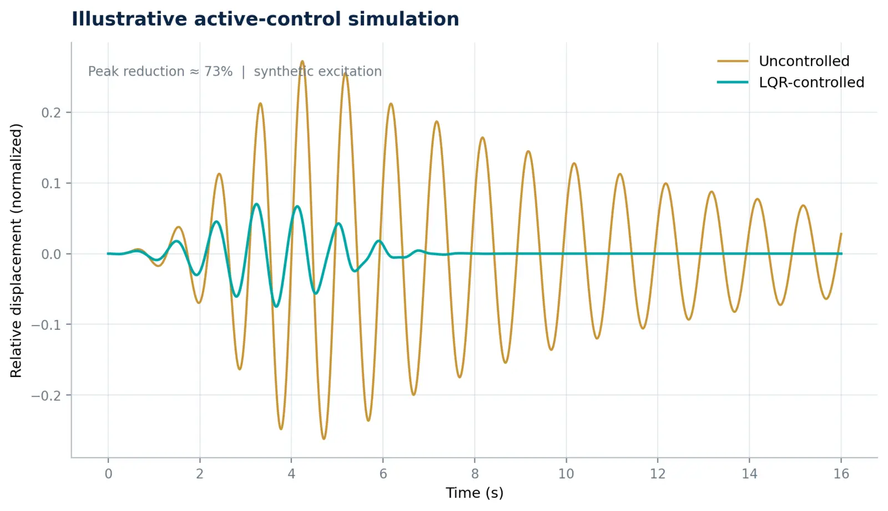
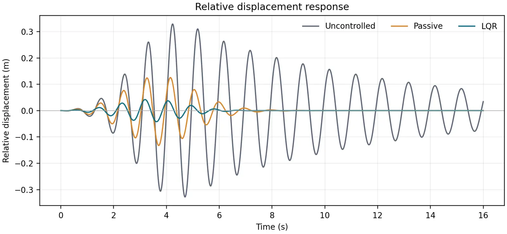
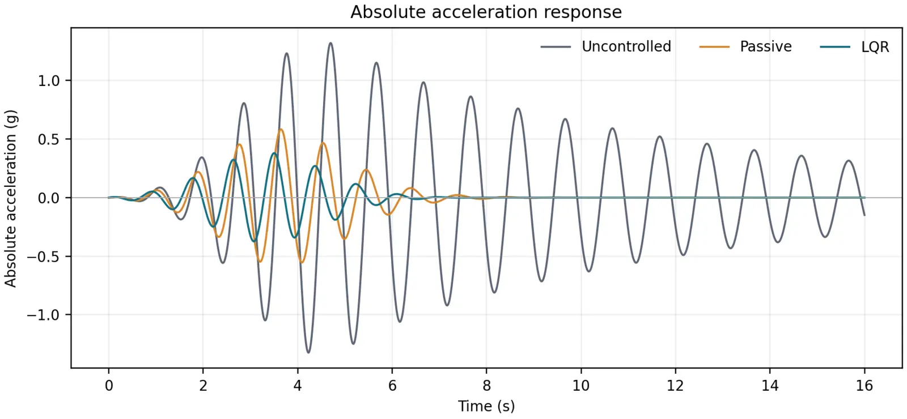
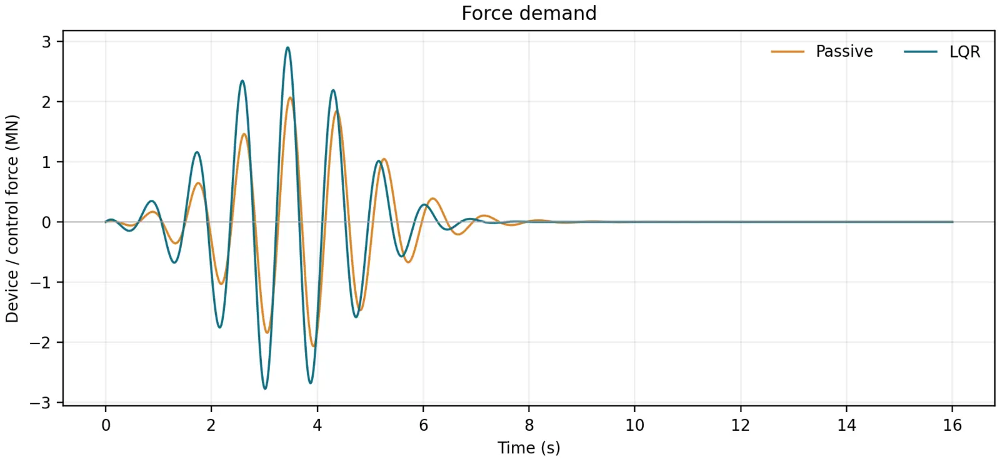
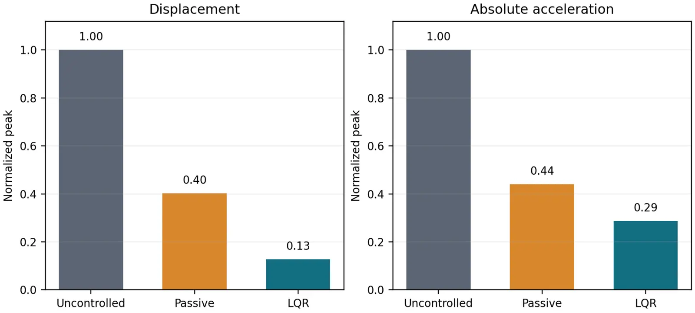

SMART STRUCTURES / ACADEMIC EDITION
سازههای هوشمند و کنترل پاسخ لرزهای
از جداسازی پایه و میرایی تا کنترل فعال، دوقلوی دیجیتال و هوش سازهای
مرجع آموزشی - پژوهشی کنترل لرزهای، حسگرها و هوش سازهای
تألیف و تدوین علمی
یوسف بهرام بیگی
ویرایش دانشگاهی نخست | ۱۴۰۵
یادداشت نشر علمی این نسخه یک تألیف آموزشی-پژوهشی مستقل بر پایه منبع اصلی معرفیشده در کتابنامه است. نمودارها و مثال عددی بازطراحی شدهاند. برای کاربرد اجرایی، ضوابط روز و مشخصات پروژه ملاک است. |
|---|
این کتاب با هدف تبدیل یک مرجع تخصصی و گسترده درباره سازههای هوشمند به روایتی منسجم، فارسی و پژوهشمحور تدوین شده است. نقطه آغاز، کتاب Smart Structures: Innovative Systems for Seismic Response Control نوشته چِنگ، جیانگ و لو است؛ با این تفاوت که سازماندهی حاضر ترجمه خطبهخط آن اثر نیست. مفاهیم برجستهشده، روابط بنیادین و منطق طراحی از منبع استخراج شده و سپس با تفسیر مهندسی، مثال مستقل، نمودارهای محاسباتی و پیوند به جهتگیریهای معاصر توسعه یافتهاند.
مخاطب اصلی، دانشجویان تحصیلات تکمیلی مهندسی عمران و سازه، پژوهشگران کنترل سازه و مهندسانی هستند که میخواهند میان دینامیک سازه، ابزارهای کنترل، حسگرها، الگوریتمها و تصمیم طراحی یک ارتباط عملی برقرار کنند. به همین دلیل، هر فصل از چهار لایه ساخته شده است: ایده فیزیکی، مدل ریاضی، ملاحظات طراحی و مسیر پژوهش. خواننده میتواند کتاب را بهصورت پیوسته مطالعه کند یا هر فصل را بهعنوان یک راهنمای مستقل به کار گیرد.
عبارت «سطح Q1» در این اثر به معنای ادعای رتبهبندی برای کتاب نیست؛ بلکه به کیفیت سازماندهی مسئله، شفافیت فرضها، قابلیت بازتولید روابط، مرزبندی داده و استنباط، و پرهیز از نتیجهگیریهای بدون پشتوانه اشاره دارد. ضوابط کُدی منبع اصلی مربوط به زمان انتشار آن است. بنابراین هر کاربرد اجرایی باید با آییننامه لازمالاجرا، مشخصات پروژه، آزمایشهای صلاحیت و قضاوت مهندسی تطبیق داده شود.
منطق مرکزی کتاب یک سازه زمانی واقعاً هوشمند است که بتواند وضعیت را بسنجد، عدمقطعیت را تفسیر کند، تصمیم مناسب بگیرد و بدون تضعیف ایمنی ذاتی، پاسخ خود را اصلاح کند. هوشمندی جایگزین مقاومت، شکلپذیری و جزئیات صحیح نیست؛ لایهای افزوده برای ارتقای تابآوری است. |
|---|
برای یادگیری مفهومی: فصلهای ۱ و ۲، سپس مقایسه سامانهها در فصلهای ۳ تا ۶.
برای مدلسازی عددی: فصلهای ۲، ۳ و ۶ همراه با مثال و کد پیوستها.
برای طراحی سامانه اندازهگیری: فصل ۷ و چکلیست اعتبارسنجی فصل ۹.
برای پژوهش رساله یا مقاله: فصلهای ۸ و ۱۰، بهویژه صورتبندی چندهدفه و دوقلوی دیجیتال.
قرارداد نمادگذاری بردارها با حروف کوچک داخل آکولاد یا بهصورت پررنگ، ماتریسها با حروف بزرگ داخل کروشه، شتاب زمین با a_g یا ẍ_g، و نیروی کنترل با u یا F_c نمایش داده میشود. در هر فصل، فرض خطی یا غیرخطی بودن صریحاً بیان شده است. |
|---|
| عنوان | صفحه |
|---|---|
| فصل 1 ـ از سازه مقاوم تا سازه ادراکپذیر | 7 |
| فصل 2 ـ دینامیک پاسخ و منطق کنترل انرژی | 10 |
| فصل 3 ـ جداسازی پایه: مهندسی مسیر انتقال زلزله | 13 |
| فصل 4 ـ میرایی غیرفعال و استهلاک هدفمند انرژی | 16 |
| فصل 5 ـ کنترل نیمهفعال و هیبرید: سازگاری با توان محدود | 19 |
| فصل 6 ـ کنترل فعال و مدل فضای حالت | 21 |
| فصل 7 ـ حسگر، اکتساب داده و برآورد حالت | 24 |
| فصل 8 ـ جایابی بهینه حسگر و وسیله کنترل | 26 |
| فصل 9 ـ گردشکار تحلیل، طراحی و اعتبارسنجی | 28 |
| فصل 10 ـ افق نو: دوقلوی دیجیتال و هوش سازهای | 30 |
| پیوست الف ـ مثال عددی یک سامانه کممیرایی | 32 |
| پیوست ب ـ مثال عددی مقایسهای Uncontrolled، Passive و LQR | 33 |
| پیوست پ ـ واژهنامه فشرده | 38 |
| کتابنامه | 39 |
ساختار کتاب از یک زنجیره علّی پیروی میکند: خطر و تحریک، پاسخ سازه، ادراک حسگر، تصمیم کنترلگر، کنش دستگاه و ارزیابی عملکرد. جداسازی پایه و میراگرها مسیر انتقال و اتلاف انرژی را تغییر میدهند؛ کنترل فعال و نیمهفعال این اثر را با داده و فرمان سازگار میکنند؛ و دوقلوی دیجیتال حلقه یادگیری چرخه عمر را میبندد.

نقشه خانوادههای کنترل پاسخ و جایگاه نسبی آنها در سازگاری، توان و رفتار ایمن.
ترسیم مفهومی: مؤلف
فصل 1 / CHAPTER
مبانی و فلسفه طراحی
گزاره فصل هوشمندی سازه از افزودن یک وسیله آغاز نمیشود؛ از بازتعریف رابطه سازه با محیط آغاز میشود. |
|---|
سازه سامانهای است که بار را حمل یا منتقل میکند و باید در طول عمر طرح، بدون آسیب جبرانناپذیر وظیفه خود را انجام دهد. تغییرشکل زیر بارهای ایستا و ارتعاش زیر بارهای دینامیکی، اجزای پاسخ سازهاند. در طراحی متعارف، ایمنی از مسیر مقاومت و پایداری و بهرهبرداری از مسیر سختی و کنترل تغییرشکل تأمین میشود. این منطق همچنان بنیان مهندسی است، اما در برابر تحریکهای نامعین و شدید یک محدودیت دارد: ظرفیت مقاومت و اتلاف انرژی پس از ساخت، تقریباً ثابت باقی میماند [۱، صص. ۱–۲].
سازه هوشمند به سامانهای گفته میشود که بتواند تغییر در محیط یا درون خود را تشخیص دهد، داده را ذخیره و پردازش کند، وضعیت نامطلوب را در محلهای بحرانی تشخیص دهد و کنشی متناسب برای حفظ یکپارچگی، ایمنی و خدمتپذیری فرمان دهد. این تعریف چهار فعل را کنار هم میگذارد: حسکردن، تفسیرکردن، تصمیمگرفتن و عملکردن. وجود حسگر بهتنهایی هوشمندی نمیسازد؛ همانطور که وجود میراگر بدون سازوکار تصمیم، صرفاً کنترل غیرفعال است.

معماری حلقهبسته یک سازه لرزهای هوشمند: تبدیل پاسخ فیزیکی به اطلاعات و سپس نیروی اصلاحی.
ترسیم و محاسبه: مؤلف
منبع اصلی سه محدودیت را برجسته میکند: میرایی ذاتی کوچک مصالح رایج، ظرفیت ثابت مقاومت و اتلاف انرژی، و اتکای زیاد به سختی برای مقابله با بار. افزایش موضعی سطح مقطع نیز همواره پاسخ سادهای نیست؛ زیرا در سازه نامعین میتواند سختی و در نتیجه تقاضای نیرو را به همان عضو جلب کند. نتیجه، چرخهای است که در آن افزایش مقاومت بدون مدیریت تقاضا الزاماً به عملکرد بهتر منجر نمیشود [۱، ص. ۲].
فناوری کنترل پاسخ، مسیر مکمل را پیشنهاد میکند: بهجای آنکه تمام انرژی ورودی در اعضای اصلی جذب شود، بخشی از انتقال انرژی محدود، بخشی در تجهیزات مکمل مستهلک و بخشی با نیروی کنترل خنثی شود. در این نگاه، هدف فقط جلوگیری از فروریزش نیست؛ کاهش خسارت غیرسازهای، حفظ کارکرد بیمارستان یا مرکز امداد، کنترل آسایش در برجها و کوتاهکردن زمان بازگشت به بهرهبرداری نیز جزو تابع عملکرد است.
| اصل ایمنی ذاتی — هر سامانه هوشمند باید در حالت قطع برق، خطای حسگر یا خرابی ارتباط به وضعیتی قابلقبول و قابلپیشبینی بازگردد. سازه نباید برای پایداری پایه خود وابسته به نرمافزار یا شبکه باشد. |
|---|
طبقهبندی مفهومی سامانههای کنترل پاسخ لرزهای بر پایه سازوکار، سازگاری و نیاز به توان بیرونی.
ترسیم مفهومی: مؤلف؛ جای نقاط کیفی و برای مقایسه جهتگیریهاست، نه امتیازدهی کمی.
جدول ۱-۱. مقایسه معماریهای اصلی کنترل سازه
| سامانه | منبع نیروی کنترل | توان بیرونی | مزیت غالب | محدودیت غالب |
|---|---|---|---|---|
| جداسازی پایه | تغییر مسیر انتقال انرژی | خیر | کاهش شتاب روسازه | افزایش جابهجایی در تراز جداسازی |
| غیرفعال | حرکت خود سازه | خیر | سادگی و قابلیت اطمینان | پارامترهای ثابت |
| نیمهفعال | وسیله غیرفعال قابلتنظیم | کم | سازگاری همراه با رفتار fail-safe | محدودیت ظرفیت پایه وسیله |
| فعال | محرک و منبع توان | زیاد | انتخابپذیری هدف کنترل | توان، پایداری و نگهداری |
| هیبرید | ترکیب غیرفعال و فعال | متوسط | تعادل کارایی و اطمینان | پیچیدگی یکپارچهسازی |
مشاهدهپذیری: آیا کمیتهای لازم برای تشخیص وضعیت واقعاً قابل اندازهگیری یا برآورد هستند؟
کنترلپذیری: آیا محرکها میتوانند مودها و درجات آزادی بحرانی را با نیروی معقول تحت تأثیر قرار دهند؟
تابآوری خطا: آیا خرابی یک حسگر، محرک یا کانال ارتباطی به رفتار خطرناک منجر نمیشود؟
قابلیت اعتبارسنجی: آیا عملکرد در تحلیل، آزمایش و بهرهبرداری با شاخصهای مشترک سنجیده میشود؟
قابلیت نگهداری: آیا کالیبراسیون، تعویض، پایش سلامت تجهیزات و مدیریت نرمافزار پیشبینی شده است؟
بلوغ واقعی زمانی حاصل میشود که این پنج معیار در کنار مقاومت و شکلپذیری سازهای بررسی شوند. بنابراین واژه «هوشمند» باید یک ادعای قابلآزمون باشد، نه برچسب بازاریابی. این صورتبندی، مبنای فصلهای بعد برای تحلیل هر فناوری خواهد بود.
فصل 2 / CHAPTER
از معادله حرکت تا تصمیم طراحی
گزاره فصل کنترل مؤثر، پیش از الگوریتم، به فهم مسیر ورود و اتلاف انرژی نیاز دارد. |
|---|
برای آشکارشدن منطق کنترل، سازه یک درجه آزادی با جرم m، میرایی c و سختی k را در نظر میگیریم. جابهجایی نسبی جرم نسبت به زمین x(t) و شتاب زمین a_g(t) است. معادله تعادل دینامیکی بهصورت زیر نوشته میشود [۱، ص. ۳]:
m x¨(t) + c x˙(t) + k x(t) = −m a_g(t) (۲-۱)
با تعریف فرکانس طبیعی ω_n=√(k/m) و نسبت میرایی ζ=c/(2mω_n)، معادله نرمالشده حاصل میشود. این تبدیل نشان میدهد که پاسخ فقط به اندازه مطلق جرم و سختی وابسته نیست؛ نسبت فرکانس تحریک به فرکانس طبیعی و نسبت میرایی نقش تعیینکننده دارند.
x¨ + 2ζω_n x˙ + ω_n²x = −a_g (۲-۲)
حل پاسخ تحت تحریک هارمونیک نشان میدهد سه مسیر بنیادی برای کاهش پاسخ وجود دارد: کاهش انرژی انتقالیافته از زمین، افزایش میرایی، و دورکردن فرکانس طبیعی از ناحیه تشدید. جداسازی پایه عمدتاً اهرم اول و سوم را به کار میگیرد؛ میراگرها اهرم دوم را تقویت میکنند؛ و کنترل فعال میتواند ترکیبی زمانمتغیر از هر سه اثر ایجاد کند [۱، صص. ۳–۵].

اثر نسبت میرایی بر ضریب بزرگنمایی دینامیکی. منحنیها از رابطه پاسخ ماندگار سامانه خطی محاسبه شدهاند.
ترسیم و محاسبه: مؤلف
در نزدیکی r=ω/ω_n=1، ضریب بزرگنمایی برای سامانه کممیرایی تقریباً برابر 1/(2ζ) است. بنابراین برای ζ=0.02، مقدار نظری حدود 25 و برای ζ=0.20 حدود 2.5 خواهد بود. نمودار نشان میدهد چرا افزودن میرایی، بهویژه در مود غالب، میتواند با نیروی کنترلی بسیار کمتر از تلاشی که برای تغییر محسوس جرم یا سختی لازم است پاسخ را مهار کند.
اگر یک وسیله کنترلی با جرم کوچک m_c و نیروی F_c به سامانه افزوده شود، مدل عمومی را میتوان چنین نوشت:
(m+m_c)x¨ + c x˙ + kx + F_c(t) = −(m+m_c)a_g(t) (۲-۳)
در یک تقریب خطی، F_c=c_c x˙+k_c x است. در نتیجه، وسیله کنترل ضرایب مؤثر میرایی و سختی را تغییر میدهد. اما این نمایش نباید ما را به خطی فرضکردن همه تجهیزات وادار کند؛ اصطکاک، تسلیم فلزی، روغن ویسکوز غیرخطی، اشباع محرک و تأخیر دیجیتال همگی مدلهای غیرخطی یا وابسته به تاریخچه ایجاد میکنند.
تفسیر انرژی برای مقایسه سامانهها از تفسیر نیرو گویاتر است. انرژی ورودی زلزله در هر لحظه میان انرژی جنبشی، کرنشی، اتلاف ذاتی، اتلاف وسیله و کار نیروی کنترل توزیع میشود:
E_in = E_k + E_s + E_d + E_device + E_control (۲-۴)
در طراحی مطلوب، سهم E_device و در صورت وجود E_control افزایش مییابد تا تقاضای غیرارتجاعی اعضای اصلی کاهش یابد. با این حال، افزایش اتلاف انرژی همیشه معادل کاهش همه پاسخها نیست. یک میراگر ممکن است جابهجایی را کاهش دهد اما نیروهای اتصال یا شتاب موضعی را افزایش دهد. بنابراین شاخص عملکرد باید چندکمیتی باشد.
| دام رایج — بهینهکردن فقط بیشینه جابهجایی بام میتواند به افزایش شتاب طبقات، نیروی پایه یا تقاضای محرک منجر شود. انتخاب تابع هدف باید با سطح عملکرد پروژه و اجزای غیرسازهای هماهنگ باشد. |
|---|
[M]{x¨} + [C]{x˙} + [K]{x} = −[M]{r}a_g + [Γ]{u} (۲-۵)
در این رابطه، r بردار نفوذ حرکت زمین و Γ ماتریس مکان نیروهای کنترلی است. تحلیل مودال نشان میدهد هر وسیله فقط از طریق شکل مود و محل نصب خود بر پاسخ اثر میگذارد. در نتیجه، ظرفیت بزرگ در محل نامناسب میتواند از چند وسیله کوچک در محلهای کنترلپذیر ضعیفتر باشد. این نکته پلی مستقیم میان دینامیک، جایابی تجهیزات و بهینهسازی فصل ۸ ایجاد میکند.
نسبت کاهش بیشینه و RMS جابهجایی، دریفت بینطبقهای و شتاب مطلق طبقات؛
کاهش برش پایه، نیروی اعضا و شاخصهای خسارت تجمعی؛
حداکثر نیروی کنترل، کورس محرک، سرعت و انرژی مصرفی؛
حساسیت عملکرد به رکورد زلزله، عدمقطعیت پارامترها، نویز و تأخیر؛
رفتار پس از خرابی جزئی و مدت زمان بازگشت سامانه به خدمت.
فصل 3 / CHAPTER
کاهش تقاضا با جابهجایی دوره
گزاره فصل جداسازی پایه نیرو را حذف نمیکند؛ مسیر، فرکانس و محل تمرکز تغییرشکل را مهندسی میکند. |
|---|
اگر میان سازه و زمین لایهای با سختی جانبی کم و ظرفیت قائم زیاد قرار گیرد، فرکانس غالب سامانه کاهش و دوره آن افزایش مییابد. این لایه بخش مهمی از تغییرمکان نسبی را در تراز جداسازی متمرکز میکند و روسازه را به حرکت نزدیکتر به جسم صلب سوق میدهد. این فناوری برای ساختمانهای کوتاه و میانمرتبه با دوره اولیه کوتاه، در بسیاری از شرایط میتواند انتقال مؤلفههای پرفرکانس را محدود کند [۱، صص. ۱۰–۱۵].

مقایسه مفهومی سازه پایهثابت و جداسازیشده؛ تغییرشکل عمده در لایه جداسازی متمرکز میشود.
ترسیم و محاسبه: مؤلف
کارایی جداسازی وابسته به طیف محل، فاصله از گسل، خاک، محدودیت فاصله جداسازی، پیچش، پایداری قائم و رفتار اجزای عبوری از درز است. در خاک بسیار نرم یا جایی که محتوای انرژی رکورد در دورههای بلند زیاد است، صرف افزایش دوره ممکن است مزیت مورد انتظار را ایجاد نکند. بنابراین جداسازی یک «محصول» نیست؛ یک سامانه سازهای-ژئوتکنیکی-تأسیساتی است.
با فرض صلبیت کافی روسازه، جرم m روی لایهای با سختی k_b و میرایی c_b قرار میگیرد. معادله جابهجایی نسبی x نسبت به زمین چنین است [۱، صص. ۵۱–۵۴]:
m x¨ + c_b x˙ + k_b x = −m a_g (۳-۱)
T_b = 2π√(m/k_b) , ζ_b = c_b/(2mω_b) (۳-۲)
دوره T_b باید به اندازهای بزرگ باشد که تقاضای شتاب روسازه کاهش یابد، اما افزایش بیرویه دوره جابهجایی طرح را بزرگ میکند. میرایی مؤثر نیز یک متغیر متوازنکننده است: میرایی بیشتر جابهجایی را محدود میکند، ولی ممکن است انتقال نیرو یا شتابهای فرکانس بالا را افزایش دهد. انتخاب T_b و ζ_b یک مسئله چندهدفه است، نه قاعده تکپارامتری.
جدول ۳-۱. خانوادههای متداول جداگر و ملاحظات اصلی
| نوع | سازوکار | ویژگی برجسته | موضوع کنترلکننده طراحی |
|---|---|---|---|
| لاستیکی لایهای | تغییرشکل برشی لاستیک + ورق فولادی | ساخت ساده و سختی قائم زیاد | میرایی کم و جابهجایی بزرگ |
| سربلاستیکی LRB | تسلیم هسته سربی | بازمرکزشوندگی و اتلاف انرژی | گرمایش، خستگی و تغییر خواص |
| لاستیک پُرمیرایی HDRB | اتلاف در ترکیب لاستیکی | یکپارچگی وسیله | وابستگی خواص به کرنش، دما و نرخ |
| آونگ اصطکاکی FPS | لغزش روی سطح مقعر | دوره تابع شعاع انحنا | اصطکاک، سایش و تغییرپذیری سطح |
در جداگر لاستیکی، ورقهای فولادی مانع برآمدگی جانبی لایههای لاستیک میشوند و سختی قائم را بهطور چشمگیر بالا میبرند. افزودن هسته سربی، حلقه هیسترزیس و اتلاف انرژی ایجاد میکند. در HDRB، خود ترکیب لاستیکی وظیفه میرایی را بر عهده دارد. در FPS، بازگشت به مرکز از هندسه سطح مقعر و اتلاف انرژی از اصطکاک ناشی میشود؛ برخلاف سطح تخت، هندسه مقعر پتانسیل بازمرکزشوندگی فراهم میکند [۱، صص. ۱۱–۱۵].
رفتار بسیاری از جداگرها با مدل دوخطی شامل سختی اولیه k_e، سختی پس از تسلیم k_p و مقاومت مشخصه Q تقریب زده میشود. برای دامنه جابهجایی طرح D، سختی سکانتی و میرایی معادل را میتوان بهصورت زیر ارزیابی کرد:
k_eff = k_p + Q/D (۳-۳)
ζ_eff = E_D /(2π k_eff D²) (۳-۴)
E_D مساحت حلقه هیسترزیس در یک چرخه کامل است. این روابط پارامترهای دامنهوابستهاند؛ بنابراین مقدار سختی و میرایی مؤثر باید در دامنههای متناظر با سطوح خطر و با درنظرگرفتن کران بالا و پایین خواص تعیین شود. استفاده از یک مقدار اسمی برای همه شرایط، عدمقطعیت دما، پیرشدگی، سرعت و تلرانس ساخت را پنهان میکند.
[M]{x¨} + [C]{x˙} + [K]{x} = −a_g[M]{1} (۳-۵)
در سامانه جداسازیشده، میرایی لایه پایه معمولاً از میرایی روسازه بزرگتر است؛ ازاینرو ماتریس میرایی الزاماً کلاسیک و مودها کاملاً متعامد نیستند. منبع نشان میدهد برای بسیاری از سازههای متعارف، مؤلفههای خارجقطر پس از تبدیل مودال کوچکاند، اما با افزودن تجهیزات میرایی قوی ممکن است نتوان آنها را نادیده گرفت و تحلیل مودال مختلط یا تحلیل تاریخچه زمانی مستقیم لازم شود [۱، صص. ۵۶–۶۰].
| نکته اجرایی — فاصله آزاد پیرامون سازه، اتصالات انعطافپذیر لولهها، راهپله و آسانسور، مهار اجزای غیرسازهای و قابلیت بازرسی جداگرها بخشی از طراحی اصلیاند. شکست این جزئیات میتواند مزیت تحلیل سازهای را خنثی کند. |
|---|
تعریف سطح عملکرد و اجزای نیازمند تداوم کارکرد؛
بررسی طیف محل، اثر گسل نزدیک، خاک و ظرفیت جابهجایی؛
انتخاب دوره و میرایی هدف و تعیین معماری جداگرها؛
ساخت مدل خطی برای غربال اولیه و مدل غیرخطی برای ارزیابی نهایی؛
کنترل پیچش، کشش/فشار، کمانش، برخورد و اجزای عبوری از درز؛
آزمایش نمونه، اعمال کران خواص و برنامه بازرسی چرخه عمر.
فصل 4 / CHAPTER
میراگرها، جرم تنظیمشده و حلقههای هیسترزیس
گزاره فصل میراگر خوب انرژی را در جایی تلف میکند که قابلکنترل، قابلبازرسی و قابلتعویض باشد. |
|---|
سامانه غیرفعال بدون اندازهگیری و فرمان برخط، از حرکت خود سازه برای تولید نیروی مقاوم استفاده میکند. هدف آن کاهش پاسخ و احتمال آسیب یا فروریزش از طریق مشارکت مستقیم در اتلاف انرژی است. عملکرد سازه میراشده هم به نوع وسیله و هم به آرایش نصب وابسته است؛ بنابراین مشخصات کاتالوگی بهتنهایی معیار کارایی نیست [۱، صص. ۱۰۹–۱۱۰].
مزیت اصلی این خانواده، سادگی، قابلیت اطمینان و عدم نیاز به توان بیرونی است. محدودیت آن نیز ثابتبودن پارامترهاست: وسیله برای دامنه، سرعت و فرکانس خاصی بهینه میشود و در تحریک متفاوت ممکن است کارایی کمتر داشته باشد. این محدودیت با تحلیل مجموعه رکوردها و طراحی مقاوم در برابر عدمقطعیت مدیریت میشود، نه با انتخاب یک رکورد نماینده.
برای میراگر سیال ویسکوز غیرخطی، رابطه نیرو-سرعت معمولاً به فرم زیر نوشته میشود. ضریب α رفتار را از خطی تا زیرخطی کنترل میکند:
F_d = c_d |v|^α sgn(v) , 0 < α ≤ 1 (۴-۱)
مدل ساده ویسکوالاستیک، ترکیب موازی فنر و میراگر است؛ درحالیکه وسیله اصطکاکی در تقریب کولنی نیرویی تقریباً مستقل از سرعت و متناسب با نیروی نرمال تولید میکند:
F_VE = k_d x + c_d v ; F_f = μN sgn(v) (۴-۲)
در میراگر تسلیم فلزی، سطح زیر حلقه نیرو-تغییرمکان معرف انرژی مستهلکشده است. شکل حلقه به سختشوندگی، پینچشدگی، افت مقاومت و تاریخچه بارگذاری وابسته است. برای مقایسه دستگاهها باید انرژی چرخهای، نیروی اوج، جابهجایی مجاز، افزایش دما و دوام کمچرخه همزمان بررسی شوند.

نمونه محاسباتی دو سازوکار اتلاف انرژی؛ مساحت محصور حلقه برابر انرژی مستهلکشده در چرخه است.
ترسیم و محاسبه: مؤلف
TMD از جرم ثانویه m_d، سختی k_d و میرایی c_d تشکیل میشود. با تنظیم فرکانس آن نزدیک مود هدف، بخشی از انرژی ارتعاشی سازه به حرکت جرم ثانویه منتقل و در میراگر آن مستهلک میشود. کارایی به نسبت جرم μ=m_d/m، نسبت تنظیم فرکانس و میرایی هر دو سامانه وابسته است. TMD برای پاسخ کممیرایی با مود غالب—بهویژه ارتعاش باد—بسیار مؤثر است، اما برای زلزلهای که چند مود در آن مهم است، یک TMD منفرد میتواند حساس و محدود باشد [۱، صص. ۱۷–۱۹].
ω_d = √(k_d/m_d) , μ = m_d/m (۴-۳)
راهکارهای توسعهیافته شامل چند TMD با فرکانسهای پخششده، TLD، جرم تنظیمشده نیمهفعال و سامانههای جرم هیبرید است. معیار انتخاب باید شامل فضای حرکت، محدودیت کورس، اثر مودهای بالاتر، نگهداری و پیامد خروج از تنظیم بر اثر تغییر سختی سازه باشد.
جدول ۴-۱. مقایسه فیزیک رفتاری میراگرهای غیرفعال
| وسیله | متغیر غالب نیرو | مزیت | کنترل طراحی |
|---|---|---|---|
| اصطکاکی | نیروی نرمال و جهت لغزش | اقتصادی و حلقه پایدار | آستانه لغزش و گیرکردن |
| فلزی تسلیمی | تغییرمکان و تاریخچه | جذب انرژی زیاد و قابلتعویض | خستگی کمچرخه و کمانش |
| ویسکوالاستیک | تغییرمکان، سرعت، دما | نیرو در دامنههای کوچک | وابستگی دمایی و پیرشدگی |
| سیال ویسکوز | سرعت نسبی | کاهش پاسخ با سختی افزوده کم | آببندی، دما و نیروی اتصال |
اصطکاک از نظر تبدیل انرژی جنبشی به گرما سازوکاری قابلاتکا و اقتصادی است، ولی آغاز لغزش، تغییر ضریب اصطکاک و نیروی قفل باید کنترل شود. میراگر فلزی میتواند آسیب را در قطعهای فیوزمانند متمرکز کند. میراگر ویسکوز با نیروی وابسته به سرعت، در بسیاری از آرایشها بدون افزایش محسوس سختی جانبی، میرایی مؤثر را بالا میبرد. هیچیک بهطور مطلق برتر نیستند؛ سازگاری با هدف عملکرد و جزئیات اتصال تعیینکننده است.
میراگر تنها وقتی انرژی مستهلک میکند که تغییرمکان یا سرعت نسبی کافی در دو سر آن شکل گیرد. سختی مهاربند، لقی اتصال، تغییرشکل تیر و ستون و هندسه آرایش میتواند حرکت مؤثر وسیله را کاهش دهد. در تحلیل، مدل سری شامل سختی اتصال و بادبند باید کنار مدل خود میراگر قرار گیرد. نیروی محوری، برونمرکزی، کمانش و ظرفیت گاستپلیت نیز بخشی از مسیر نیرو هستند.
قاعده طراحی ظرفیت اسمی وسیله را با «تقاضای قابلتحویل به وسیله» اشتباه نگیرید. اگر سازه و اتصال حرکت لازم را به میراگر منتقل نکنند، دستگاه پرظرفیت نیز انرژی کمی جذب خواهد کرد. |
|---|
آزمون نمونه اولیه در دامنه، سرعت و تعداد چرخه متناظر با تقاضای طرح؛
بررسی تغییر نیرو و انرژی چرخهای بر اثر دما، فرکانس و گرمشدن؛
تعریف کران بالا و پایین خواص برای تحلیل سازه؛
کنترل نشتی، افت فشار، سایش، خوردگی و قابلیت تعویض؛
ثبت شناسه دستگاه، نتایج آزمون و برنامه پایش در پرونده چرخه عمر.
فصل 5 / CHAPTER
میراگر هوشمند، منطق فرمان و رفتار ایمن
گزاره فصل کنترل نیمهفعال نیرو را از هیچ تولید نمیکند؛ ظرفیت موجود را در زمان مناسب سازمان میدهد. |
|---|
سامانه نیمهفعال یک وسیله غیرفعال را با سازوکار قابلتنظیم، حسگر، رایانه کنترل و محرک کوچک ترکیب میکند. محرک، نیروی بزرگی را مستقیماً به سازه وارد نمیکند؛ رفتار دستگاه—مانند روزنه جریان، میدان مغناطیسی یا نیروی گیره—را تغییر میدهد. به همین دلیل توان مصرفی کم، رفتار پایه غالباً fail-safe و کارایی بالاتر از وسیله با پارامتر ثابت حاصل میشود [۱، صص. ۲۶–۳۳].
سامانه هیبرید یک جزء غیرفعال یا جداساز را با کنترل فعال ترکیب میکند. بخش غیرفعال سهم اصلی اطمینان و ظرفیت را فراهم میکند و بخش فعال خطا، خروج از تنظیم یا مؤلفههای پاسخ باقیمانده را اصلاح میکند. نتیجه میتواند محرک کوچکتر و نیاز توان کمتر از کنترل کاملاً فعال باشد، اما تحلیل تعامل اجزا و حالت خرابی پیچیدهتر است.
در میراگر مغناطیسی-رئولوژیک، میدان مغناطیسی تنش تسلیم ظاهری سیال را در زمان بسیار کوتاه تغییر میدهد. در مدلهای ساده، نیروی قابلدستیابی میان دو کران وابسته به سرعت، جابهجایی و فرمان قرار میگیرد. مدل بوک-ون یا مدلهای هیسترزیس اصلاحشده برای بازنمایی دقیقتر به کار میروند. میراگر ER از میدان الکتریکی استفاده میکند، اما محدودیت ولتاژ و ظرفیت نیرو در کاربردهای بزرگ اهمیت دارد.
F_MR = c(v_c)x˙ + k(v_c)x + F_y(v_c) z_h (۵-۱)
در این نمایش مفهومی، v_c فرمان، F_y تنش تسلیم کنترلی و z_h متغیر داخلی هیسترزیس است. پارامترها باید از آزمون شناسایی شوند؛ انتقال مستقیم ضرایب از یک دستگاه یا دامنه آزمایش به پروژه دیگر اعتبار ندارد.
یکی از راهبردهای شناختهشده آن است که ابتدا کنترلگر مطلوب نیروی هدف F* را محاسبه کند، سپس فرمان وسیله نیمهفعال طوری انتخاب شود که نیروی واقعی تا حد امکان در جهت کاهش خطا قرار گیرد. چون وسیله قادر به تزریق دلخواه انرژی نیست، نگاشت F* به فرمان باید قیود فیزیکی را رعایت کند.
v_c = v_max if (F*−F)F > 0; otherwise v_c = 0 (۵-۲)
تفسیر این قانون به معنای تعقیب کامل نیروی فعال نیست. کنترلگر فقط زمانی شدت دستگاه را افزایش میدهد که این تغییر، نیروی موجود را به نیروی هدف نزدیک کند. در غیر این صورت، فرمان کمینه میشود. |
|---|
دستگاه واقعی دارای زمان پاسخ شیر، فیلتر، تبدیل دیجیتال، ارتباط و محاسبه است. تأخیر مجموع میتواند فاز نیروی کنترل را تغییر دهد و حتی عملکرد مطلوب را معکوس کند. اشباع نیرو و نرخ تغییر فرمان نیز باید در مدل وجود داشته باشد. منبع اصلی هشدار میدهد که دینامیک محرک هیدرولیکی ممکن است با سازه اندرکنش کرده و حلقه باز را ناپایدار کند؛ تثبیت محرک پیش از طراحی سطح بالای کنترل ضروری است [۱، صص. ۱۵۹–۱۶۰].
جرم هیبرید: TMD بار اصلی را میگیرد و محرک خروج از تنظیم و کورس را اصلاح میکند؛
جداسازی هیبرید: جداگر تقاضای شتاب را کاهش میدهد و محرک جابهجایی پایه را محدود میکند؛
مهاربند میراگر-محرک: میراگر انرژی را تلف و محرک نیروی اصلاحی محدود اعمال میکند؛
چندلایه: کنترل محلی سریع در دستگاه و کنترل ناظر کندتر در سطح ساختمان.
در کنترل سازه، کارایی متوسط خوب کافی نیست؛ باید بدترین حالت معقول نیز قابلقبول باشد. از این رو ارزیابی مونتکارلو، سناریوهای قطعی خرابی، نویز، تأخیر و تغییر پارامتر باید کنار تحلیل رکوردهای زلزله قرار گیرد.
جدول ۵-۱. تحلیل مقدماتی حالت خرابی سامانه نیمهفعال/هیبرید
| خرابی | اثر بالقوه | راهبرد کاهش ریسک |
|---|---|---|
| قطع برق | قفل یا افت فرمان | حالت پیشفرض غیرفعال پایدار + ذخیره انرژی محدود |
| خرابی حسگر | فرمان نادرست | افزونگی، آشکارسازی ناسازگاری و کنترل کراندار |
| قطع ارتباط | داده کهنه | کنترل محلی و برچسب زمانی |
| اشباع وسیله | عدم تحقق نیروی هدف | anti-windup و طراحی مبتنی بر ظرفیت واقعی |
| خطای مدل | افت کارایی یا ناپایداری | کنترل مقاوم، آزمون سناریو و محدودکننده ایمنی |
فصل 6 / CHAPTER
از معادله حرکت تا LQR و پایداری حلقهبسته
گزاره فصل کنترل فعال آزادی بیشتری میدهد، اما هر آزادی تازه یک قید تازه در توان، اندازهگیری و پایداری ایجاد میکند. |
|---|
سامانه فعال از سازه، حسگرها، کنترلگر، محرک و منبع توان تشکیل میشود. حسگر پاسخ یا تحریک را به سیگنال تبدیل میکند؛ کنترلگر بر اساس قانون ازپیشتعریفشده فرمان میسازد؛ و محرک نیرویی مستقیم به سازه وارد میکند. برخلاف سامانه غیرفعال، ضرایب مؤثر نیرو میتوانند در زمان تغییر کنند. این سازگاری کامل مزیت اصلی و نیاز به توان و زیرساخت اندازهگیری محدودیت اصلی است [۱، صص. ۳۳–۴۰ و ۱۵۹–۱۶۰].
[M]{x¨}+[C]{x˙}+[K]{x}=[Γ]{u}+{δ}a_g (۶-۱)
Γ محل و جهت اثر محرکها و δ بردار اثر شتاب زمین است. برای تبدیل معادله مرتبه دوم به فرم مرتبه اول، بردار حالت z=[xᵀ ẋᵀ]ᵀ تعریف میشود. تعداد معادلات دو برابر میشود، اما چارچوب استاندارد کنترل خطی به دست میآید [۱، صص. ۱۶۷–۱۶۸].
z˙ = Az + B_u u + B_r a_g (۶-۲)
A = [ 0 I ; −M⁻¹K −M⁻¹C ] , B_u = [0 ; M⁻¹Γ] (۶-۳)
مقادیر ویژه A قطبهای سامانهاند. برای سامانه خطی پیوسته، قرارگرفتن همه قطبها در نیمصفحه چپ شرط پایداری مجانبی است. حرکت قطبهای مودهای مهم به چپ معمولاً به میرایی بیشتر و فروکش سریعتر پاسخ تعبیر میشود، ولی محدودیت نیروی محرک و حساسیت به نویز باید همزمان دیده شود.
در حلقه باز، نیروی کنترل از اندازهگیری تحریک زمین تعیین میشود. این معماری حسگر سادهای دارد، اما شکل آینده تحریک عموماً از پیش معلوم نیست. در حلقه بسته، پاسخ سازه بازخورد داده میشود و قانون u=−Gz شکل میگیرد. طرح ترکیبی از هر دو اطلاعات استفاده میکند. منبع اصلی حلقه بسته را برای کنترل لرزهای عملیتر میداند، زیرا بهره بهینه را میتوان بدون دانستن کل رکورد آینده تعیین کرد [۱، صص. ۱۶۹–۱۷۲].
u(t)=−Gz(t) ⇒ A_c=A−B_uG (۶-۴)
اگر فقط سرعت بازخورد شود، ماتریس سختی تغییر نمیکند و ترم ΓG_v به میرایی مؤثر افزوده میشود. این نتیجه با منطق فصل ۲ سازگار است: افزایش میرایی معمولاً نیروی کمتری از تغییر محسوس جرم یا سختی میطلبد. با این حال اندازهگیری مستقیم سرعت و جابهجایی در زلزله دشوار است و استفاده از شتابسنج همراه با ناظر حالت اهمیت مییابد.
کنترلگر LQR بهره G را طوری انتخاب میکند که مصالحه میان پاسخ حالت و تلاش کنترل در تابع هزینه درجه دوم برقرار شود:
J = ∫₀∞ (zᵀQz + uᵀRu) dt (۶-۵)
AᵀP + PA − PBR⁻¹BᵀP + Q = 0 ; G=R⁻¹BᵀP (۶-۶)
ماتریس Q اهمیت جابهجاییها و سرعتها و R هزینه نیروی کنترل را وزن میدهد. انتخاب آنها صرفاً تنظیم عددی نیست؛ باید از حدود دریفت، شتاب، کورس و توان ناشی شود. وزن بسیار کوچک R نیروی بزرگ و حساسیت به اشباع ایجاد میکند؛ وزن بسیار بزرگ R کنترلگر را محافظهکار میسازد.

پاسخ نمونه SDOF تحت تحریک مصنوعی: مقایسه سامانه بدون کنترل و کنترلشده با LQR. نتیجه صرفاً آموزشی و وابسته به پارامترهای مثال است.
ترسیم و محاسبه: مؤلف
rank([B AB … Aⁿ⁻¹B]) = n (۶-۷)
rank([Cᵀ AᵀCᵀ … (Aᵀ)ⁿ⁻¹Cᵀ]) = n (۶-۸)
شرط رتبه کنترلپذیری تضمین میکند حالتها از طریق ورودی قابل اثرگذاریاند و شرط مشاهدهپذیری امکان بازسازی حالت از خروجی را میسنجد. در سازه بزرگ، رتبه جبری بهتنهایی کافی نیست؛ گرامینهای بدشرط میتوانند نشان دهند کنترل یا مشاهده یک مود به نیروی زیاد یا دقت بسیار بالا نیاز دارد. بنابراین جایابی محرک و حسگر باید بر معیارهای کمی کنترلپذیری/مشاهدهپذیری بنا شود.
گسستهسازی مدل با زمان نمونهبرداری متناسب با بالاترین مود کنترلشونده؛
مدلکردن اشباع نیرو، کورس، نرخ و دینامیک محرک؛
فیلتر ضد aliasing و برچسب زمانی مشترک برای حسگرها؛
آزمون hardware-in-the-loop پیش از نصب کامل؛
ناظر ایمنی مستقل برای قطع فرمان ناپایدار یا خارج از محدوده؛
ثبت رویداد و امکان بازپخش داده برای ممیزی عملکرد.
| اصل محافظهکارانه — کنترلگری که فقط روی مدل اسمی عالی است، برای سازه واقعی آماده نیست. طراحی باید تغییر سختی پس از آسیب، نویز، تأخیر، خطای شناسایی و خروج یک محرک را تحمل کند. |
|---|
فصل 7 / CHAPTER
زیرساخت ادراک سازه
گزاره فصل داده زیاد، بدون کالیبراسیون و همزمانی، الزاماً اطلاعات درست تولید نمیکند. |
|---|
در سازه هوشمند، حسگر مرز میان جهان فیزیکی و الگوریتم است. کمیت مکانیکی به سیگنال الکتریکی تبدیل، تقویت، فیلتر، نمونهبرداری، زمانگذاری و ذخیره میشود. خطا در هر حلقه میتواند در کنترلگر تقویت شود. ازاینرو طراحی سیستم اندازهگیری همارز طراحی یک زیرسامانه ایمنی است، نه خرید مجموعهای از حسگرها.
منبع اصلی حسگرهای جابهجایی خطی یا دورانی، سرعتسنج، شتابسنج، کرنشسنج و مبدل نیرو را برای سازههای لرزهای بررسی میکند [۱، فصل ۶]. انتخاب باید از کمیت موردنیاز در قانون کنترل و محدوده فرکانسی آغاز شود. حسگری که از نظر دقت ایستا مناسب است، ممکن است در دامنه دینامیکی یا شتاب شدید اشباع شود.
جدول ۷-۱. انتخاب حسگر بر اساس کمیت و محدودیت
| حسگر | کمیت مستقیم | مزیت | چالش اصلی |
|---|---|---|---|
| LVDT | جابهجایی نسبی | دقت زیاد و رفتار خطی | نیاز به نقطه مرجع و محدودیت کورس |
| شتابسنج | شتاب مطلق/نسبی | نصب ساده و مناسب دینامیک | رانش پس از انتگرالگیری |
| کرنشسنج | کرنش موضعی | حساس به رفتار عضو | دما، چسبندگی و موضعیبودن |
| مبدل نیرو | نیروی اتصال/وسیله | اعتبارسنجی مستقیم دستگاه | کالیبراسیون و مسیر بار |
| GNSS/بینایی | جابهجایی مطلق | مرجع بیرونی و میدان دید گسترده | نرخ، تأخیر، دید و شرایط محیطی |
بر اساس قضیه نایکوئیست، نرخ نمونهبرداری باید بیش از دو برابر بالاترین فرکانس موردنظر باشد؛ اما برای کنترل و شناسایی دقیق معمولاً حاشیه بیشتری لازم است. فیلتر آنالوگ ضد aliasing باید پیش از تبدیل A/D قرار گیرد. اگر مودهای بالا به بازه پایین تا بخورند، کنترلگر ممکن است انرژی را در فرکانس نادرست تزریق کند.
f_s > 2 f_max (حد نظری) ; Δt = 1/f_s (۷-۱)
همزمانی زمانی میان کانالها به اندازه دقت دامنه مهم است. اختلاف ساعت چند میلیثانیهای میتواند برآورد فاز را در مودهای سریع تغییر دهد. پروتکل زمان مشترک، برچسب زمانی سختافزاری، آزمون تأخیر انتهابهانتها و ثبت بستههای ازدسترفته باید در مشخصات سامانه بیاید.
بهدستآوردن جابهجایی از انتگرالگیری دوگانه شتاب مستعد رانش است. حذف میانگین، تصحیح خط مبنا و فیلتر بالاگذر میتواند رانش را کم کند، اما مؤلفه کمفرکانس واقعی را نیز حذف میکند. در کنترل بلادرنگ، راه بهتر اغلب همجوشی شتاب با اندازهگیری مکمل و استفاده از ناظر حالت است.
z˙ = Az + Bu + Gw ; y = Cz + v (۷-۲)
ẑ˙ = Aẑ + Bu + L(y−Cẑ) (۷-۳)
ناظر لونبرگر یا فیلتر کالمن حالتهایی مانند جابهجایی و سرعت را از اندازهگیریهای محدود بازسازی میکند. L باید خطای برآورد را پایدار کند. در کالمن، کوواریانس نویز فرایند Q_w و نویز اندازهگیری R_v مصالحه میان اعتماد به مدل و حسگر را تعیین میکند. انتخاب این ماتریسها باید از داده کالیبراسیون و خطای مدل حمایت شود، نه صرفاً تنظیم دستی برای نمودار زیبا.
کالیبراسیون قابلردیابی و ثبت ضریب، آفست و تاریخ انقضا؛
آشکارسازی داده پرت، حسگر گیرکرده و تغییر ناگهانی نویز؛
افزونگی تحلیلی: مقایسه حسگر با پیشبینی مدل یا حسگر مجاور؛
تفکیک شبکه کنترل از شبکه عمومی و کنترل دسترسی مبتنی بر نقش؛
امضای نسخه نرمافزار، ثبت تغییرات و امکان بازگشت امن؛
ذخیره داده خام در کنار داده فیلترشده برای ممیزی.
اصل کیفیت داده هر خروجی کنترل باید همراه با سنجه اعتماد تولید شود. وقتی عدمقطعیت برآورد از حد تعریفشده عبور میکند، سامانه باید به حالت محافظهکارانه تنزل یابد. |
|---|
فصل 8 / CHAPTER
پیوند دینامیک، بهینهسازی و قابلیت اجرا
گزاره فصل مسئله واقعی، یافتن بزرگترین دستگاه نیست؛ یافتن کمترین آرایش لازم برای بیشترین اثر قابلاعتماد است. |
|---|
در سازه چنددرجهآزادی، محل وسیله تعیین میکند کدام مودها و مسیرهای نیرو تحت تأثیر قرار میگیرند. فصل ۷ منبع اصلی، جایابی محرک را با کنترلپذیری مودال، شاخص عملکرد و روشهای آماری بررسی میکند [۱، فصل ۷]. صورتبندی مدرن باید علاوه بر کارایی پاسخ، هزینه، محدودیت نصب، دسترسی نگهداری، افزونگی و عدمقطعیت را لحاظ کند.
min F(s,θ) = [J_response, J_cost, J_energy, J_risk] (۸-۱)
s_i ∈ {0,1} ; Σs_i ≤ N_max ; g_j(s,θ) ≤ 0 (۸-۲)
بردار دودویی s محلهای منتخب و θ پارامترهای دستگاه را نشان میدهد. قیود میتوانند شامل حد نیرو، کورس، فاصله معماری، ظرفیت اتصال، بودجه و حداقل افزونگی باشند. در مسئله چندهدفه، پاسخ یک نقطه نیست؛ جبهه پارتو مجموعه مصالحههای غیرمغلوب را ارائه میکند.
معیار کنترلپذیری مودال سهم یک محل در اثرگذاری بر مودهای بحرانی را میسنجد. برای حسگر، معیار مشاهدهپذیری و اطلاعات فیشر یا determinant گرامین اهمیت دارد. اما معیار صرفاً جبری ممکن است محلهایی را انتخاب کند که از نظر ساخت یا نگهداری نامناسباند. بنابراین معیار فیزیکی باید با قیود اجرایی تلفیق شود.
W_c = ∫₀ᵀ e^{At}BBᵀe^{Aᵀt} dt (۸-۳)
W_o = ∫₀ᵀ e^{Aᵀt}CᵀCe^{At} dt (۸-۴)
مقادیر ویژه کوچک گرامین نشاندهنده جهتهایی هستند که کنترل یا مشاهده آنها دشوار است. معیارهایی مانند trace، determinant، کمینه مقدار ویژه یا شرطیبودن، هرکدام ترجیح متفاوتی ایجاد میکنند. انتخاب معیار باید با هدف پاسخ—مثلاً کنترل مود اول، دریفت طبقات میانی یا شناسایی آسیب موضعی—همراستا باشد.
برای سازه با صدها محل کاندید، جستوجوی کامل ممکن نیست. الگوریتمهای حریصانه، برنامهریزی عددصحیح، روشهای مبتنی بر گرادیان برای متغیرهای پیوسته، و فراابتکاریها قابل استفادهاند. مزیت فراابتکاری در انعطاف برای قیود گسسته و مدل غیرخطی است؛ ضعف آن هزینه محاسباتی و نبود تضمین بهینگی سراسری است. تکرارپذیری با گزارش بذر تصادفی، تعداد ارزیابی و چند اجرای مستقل ضروری است.
پیوند با پژوهش خرپا در بهینهسازی خرپا و سازه هوشمند، الگوی مشترک وجود دارد: متغیرهای گسسته، تحلیل اجزای محدود در حلقه، قیود پاسخ و هزینه زیاد ارزیابی. مدل جانشین میتواند تعداد تحلیلها را کم کند، اما باید خطای آن نزدیک مرز قیود پایش شود. |
|---|
اگر هر ارزیابی شامل تحلیل تاریخچه زمانی غیرخطی برای چندین رکورد باشد، مدل جانشین Gaussian Process، شبکه عصبی یا مدل درختی میتواند نگاشت طراحی به پاسخ را تقریب بزند. یادگیری فعال نمونه بعدی را جایی انتخاب میکند که یا احتمال بهبود زیاد است یا عدمقطعیت مدل بالاست. برای جلوگیری از طرح ناایمن، نقاط نزدیک قیود باید با مدل وفادار اصلی بازبینی شوند.
min_s E[J(s,ξ)] + λ·Std[J(s,ξ)] (۸-۵)
ξ عدمقطعیت رکورد، خواص سازه، پارامتر وسیله و خطای حسگر را نمایش میدهد. کمینهکردن میانگین بهتنهایی ممکن است طرحی شکننده بسازد. افزودن انحراف معیار، صدک بالا یا احتمال تجاوز از حد، پایداری عملکرد را وارد تابع هدف میکند. در طراحی مبتنی بر قابلیت اعتماد، قید به فرم P[g(s,ξ)>0]≤p_target نوشته میشود.
تعریف روشن مدل سازه، مجموعه رکورد و دامنه عدمقطعیت؛
گزارش معیار کنترلپذیری/مشاهدهپذیری و دلیل انتخاب آن؛
مقایسه با خط پایه ساده و حداقل دو روش حل؛
گزارش بودجه ارزیابی، چند اجرای مستقل و پراکندگی نتایج؛
اعتبارسنجی طرح منتخب روی رکوردها و پارامترهای دیدهنشده؛
ارائه نقشه نصب، نیروهای اتصال و پیامد خرابی یک دستگاه.
فصل 9 / CHAPTER
از مدل اجزای محدود تا پذیرش میدانی
گزاره فصل یک نتیجه کنترل تنها زمانی معتبر است که مدل، دستگاه، داده و معیار عملکرد در یک زنجیره قابلردیابی قرار گیرند. |
|---|
گردشکار باید با فناوری آغاز نشود. ابتدا باید دارایی، خطر، سطح عملکرد، پاسخهای کنترلکننده و معیار پذیرش تعریف شوند. برای بیمارستان، شتاب تجهیزات و تداوم کارکرد ممکن است مهمتر از کمینه وزن باشد؛ برای پل، تغییرمکان نشیمن، نیروی پایه و زمان بازگشایی اهمیت دارد. این تفاوت مستقیماً تابع هدف و انتخاب سامانه را تغییر میدهد.
مدل مفهومی SDOF یا مود غالب برای فهم حساسیت و اندازه مرتبه؛
مدل خطی MDOF برای غربال سامانه و جایابی اولیه؛
مدل غیرخطی اجزای محدود با رفتار دستگاه و اتصالات؛
مدل کاهشیافته برای طراحی کنترل بلادرنگ؛
مدل آزمایشگاهی یا hardware-in-the-loop برای تأیید تعامل سختافزار و نرمافزار؛
مدل بهروزشونده بهرهبرداری برای پایش بلندمدت.
هر سطح باید با سطح قبلی سازگار و علت تفاوت پاسخها مستند شود. مدل پیچیدهتر الزاماً صحیحتر نیست؛ اگر پارامترهای آن شناساییپذیر نباشند، عدمقطعیت پنهان افزایش مییابد. کاهش مرتبه نیز باید مودها و کانالهای ورودی/خروجی مؤثر بر کنترل را حفظ کند.
مدل دستگاه باید شامل رفتار نیرو-تغییرمکان/سرعت، کران خواص، تأخیر، اشباع، سختی اتصال و حالت خرابی باشد. برای جداگر و میراگر، پارامترهای آزمایش چرخهای باید به مدل تحلیلی نگاشت شوند. برای محرک، تابع انتقال یا مدل حالت داخلی لازم است. اگر دستگاه در نرمافزار بهصورت عنصر ایدهآل وارد شود، نتیجه میتواند ظرفیت و سرعت واقعی را بیشبرآورد کند.
مجموعه رکورد باید خطر محل، بزرگا، فاصله، خاک، جهت و مدت را نمایندگی کند. تحلیل یک رکورد، حتی مشهور، برای قضاوت عمومی کافی نیست. علاوه بر پاسخ میانگین، پراکندگی، صدک بالا و رکورد کنترلکننده باید گزارش شود. در سامانه هوشمند، حساسیت کنترلگر به محتوای فرکانسی، پالس نزدیک گسل و مدت تحریک نیز اهمیت ویژه دارد.
جدول ۹-۱. ماتریس پذیرش چندلایه سامانه هوشمند
| لایه | شاخصهای نمونه | معیار شکست |
|---|---|---|
| سازه | دریفت، شتاب، برش، خسارت | تجاوز از سطح عملکرد |
| دستگاه | نیرو، کورس، سرعت، دما | اشباع یا خروج از محدوده آزمون |
| کنترل | پایداری، انرژی، تأخیر | قطب ناپایدار یا فرمان غیرمجاز |
| داده | نویز، اتلاف بسته، همزمانی | اعتماد برآورد کمتر از آستانه |
| بهرهبرداری | دسترسپذیری و زمان تعمیر | ناتوانی در تداوم خدمت |
آزمون جزء: شناسایی پارامتر و تکرارپذیری وسیله؛
آزمون زیرسامانه: اتصال، مهاربند، حسگر و محرک در کنار هم؛
آزمون حلقه سختافزار: کنترلگر واقعی با سازه شبیهسازیشده؛
آزمون تحریک محدود: بررسی قطبیت، فاز، اشباع و توقف اضطراری؛
راهاندازی: مقایسه مودهای اندازهگیریشده و مدل؛
پایش بهرهبرداری: آزمون دورهای، ثبت رخداد و بازکالیبراسیون.
منبع ۲۰۰۸ الزامات ASCE 7-05 را برای جداسازی و میراگرها تشریح میکند؛ این بخش ارزش تاریخی و آموزشی دارد، اما نباید بهعنوان ضابطه جاری استفاده شود. تا زمان تدوین این ویرایش، ASCE/SEI 7-22 استاندارد هماهنگ جاری ASCE برای بارهای طراحی معرفی شده است [۲]. در هر کشور باید نسخه مصوب ملی و ضوابط مرجع پروژه کنترل شود.
| مرز کاربرد — این کتاب راهنمای آموزشی و پژوهشی است و جایگزین آییننامه، مشخصات فنی، آزمایش صلاحیت، کنترل شخص ثالث یا مسئولیت مهندس طراح نیست. |
|---|
فصل 10 / CHAPTER
از کنترل مدلمحور تا سامانه شناختی قابلاعتماد
گزاره فصل نسل بعدی سازه هوشمند، فقط پاسخ را کنترل نمیکند؛ مدل خود را نیز با شواهد اصلاح میکند. |
|---|
در مفهوم کلاسیک، سازه هوشمند حس میکند و پاسخ خود را اصلاح میکند. دوقلوی دیجیتال یک حلقه دیگر میافزاید: مدل محاسباتی در طول چرخه عمر با داده فیزیکی بهروز میشود و برای پیشبینی، تشخیص، تصمیم و برنامهریزی نگهداری به کار میرود. مطالعات جدید، چارچوبهای چندلایه برای پلهای سالخورده و ارزیابی خودکار پسازلزله پیشنهاد کردهاند [۶، ۸].
یک مدل سهبعدی یا BIM بهتنهایی دوقلو نیست. حداقل اجزا شامل دارایی فیزیکی، مدل محاسباتی، جریان داده دوطرفه، همگامسازی زمانی، موتور تحلیل/استنباط و تاریخچه نسخههاست. بدون ردیابی منشأ داده و نسخه مدل، تصمیم مهندسی قابل ممیزی نخواهد بود.
p(θ|y) ∝ p(y|θ) p(θ) (۱۰-۱)
در بهروزرسانی بیزی، θ پارامترهایی مانند سختی، میرایی یا وضعیت اتصال و y داده اندازهگیریشده است. توزیع پسین عدمقطعیت باقیمانده را حفظ میکند و بهجای یک مقدار قطعی، دامنه باور مهندسی را میدهد. این ویژگی برای تصمیم پسازلزله حیاتی است؛ زیرا داده ناقص و مدل سادهشدهاند.
یادگیری ماشین میتواند در شناسایی آسیب، تخمین پاسخ، مدل جانشین، تنظیم کنترلگر و انتخاب عمل به کار رود. پژوهشهای ۲۰۲۵ به کنترل عصبی سامانه جداسازی غیرخطی و ATMD با تعداد حسگر کمتر پرداختهاند [۱۰] و مرورهای تازه، رشد ML در ارزیابی و بهینهسازی لرزهای را گزارش میکنند [۹]. با این حال، کارایی روی داده آزمون کافی نیست؛ پایداری حلقهبسته و رفتار خارج از توزیع باید اثبات یا کرانبندی شود.
لایه یادگیری پیشنهاد میدهد؛ محدودکننده ایمنی فرمان را با قیود فیزیکی پالایش میکند؛
کنترلگر پایه مدلمحور در زمان افت اعتماد جایگزین سیاست یادگرفتهشده میشود؛
آموزش شامل تغییر پارامتر، نویز، تأخیر، خرابی و رکوردهای خارج از نمونه است؛
عدمقطعیت پیشبینی همراه خروجی گزارش میشود؛
هر بهروزرسانی مدل یا سیاست، نسخهگذاری و در محیط سایه آزمایش میشود.
این معماری از تقسیم مسئولیت بهره میگیرد: الگوریتم دادهمحور سازگاری و سرعت را فراهم میکند، درحالیکه لایه ایمنی مدلمحور قیود تغییرناپذیر را نگه میدارد. هدف حذف مدل فیزیکی نیست؛ استفاده از داده برای اصلاح بخشهایی است که مدل در آنها ناقص یا پرهزینه است.
پس از زلزله، جریان کار میتواند داده شتاب، کرنش، تصویر و بازرسی را با مدل اجزای محدود تلفیق کند؛ تغییر مودها و الگوی ترک برای بهروزرسانی پارامترهای آسیب به کار رود؛ سپس سناریوهای پسلرزه یا بهرهبرداری ارزیابی شوند. پژوهشهای جدید به دوقلوهای باوفاداری بالا برای ارزیابی خودکار ساختمان و چارچوبهای تحلیل بلادرنگ زیرساخت پرداختهاند [۶، ۸].
تضمین پایداری برای کنترلگرهای یادگیریمحور در سازه غیرخطی؛
انتقالپذیری مدل میان سازهها، زلزلهها و شرایط محیطی؛
کمیسازی عدمقطعیت و تبدیل آن به تصمیم محدودیت بهرهبرداری؛
همجوشی تصویر، ارتعاش و مدل مکانیکی بدون همبستگی کاذب؛
تابآوری سایبری-فیزیکی و تشخیص حمله به داده یا فرمان؛
استاندارد داده، نسخهگذاری مدل و مسئولیت حقوقی تصمیم خودکار.
یک مسیر مناسب برای پژوهش دکتری سازه میتواند از مدل اجزای محدود پارامتریک آغاز شود، با داده حسگر یا تصویر بهروز شود، یک مدل جانشین برای تحلیل سریع بسازد و سپس جایابی حسگر/میراگر و تنظیم کنترل را بهصورت چندهدفه حل کند. نوآوری قوی زمانی شکل میگیرد که پیوند داده و رفتار واقعی سازه قابلردیابی باشد، نه زمانی که فقط الگوریتم جدیدی بر یک مدل قدیمی اجرا شود.
جمعبندی نهایی سازه هوشمند آینده یک سامانه سایبری-فیزیکی چندلایه است: مقاومت و شکلپذیری در هسته، اتلاف انرژی و کنترل در لایه عمل، حسگر و تخمین در لایه ادراک، و دوقلوی دیجیتال در لایه حافظه و پیشبینی. اعتبار علمی آن به پیوند شفاف این لایهها بستگی دارد. |
|---|
یک مدل SDOF با جرم m=1.0×10⁶ kg، دوره طبیعی T_n=1.0 s و نسبت میرایی ζ=0.02 در نظر گرفته میشود. هدف، مقایسه مرتبه پاسخ تشدیدی پیش و پس از افزودن میرایی معادل است. تحریک هارمونیک با دامنه شتاب A_g=0.30g و فرکانس برابر فرکانس طبیعی فرض میشود. این مثال برای فهم حساسیت است و طراحی واقعی محسوب نمیشود.
ω_n=2π/T_n=6.283 rad/s (الف-۱)
k=mω_n²=39.48 MN/m (الف-۲)
c=2ζmω_n=0.251 MN·s/m (الف-۳)
دامنه جابهجایی نسبی ماندگار در تشدید از X=A_g/(2ζω_n²) به دست میآید. برای ζ=0.02، X≈1.86 m است؛ عدد بسیار بزرگی که شکنندگی یک سامانه ایدهآل کممیرایی در تحریک باریکباند تشدیدی را نشان میدهد. اگر نسبت میرایی مؤثر به 0.20 برسد، X≈0.186 m میشود؛ یعنی کاهش نظری ۹۰ درصدی.
X_res = A_g /(2ζω_n²) (الف-۴)
برای افزایش میرایی از 0.02 به 0.20، ضریب میرایی افزوده تقریبی c_c=2(0.18)mω_n≈2.262 MN·s/m است. این عدد باید میان دستگاهها توزیع و با سرعت نسبی، نیروی اتصال و ظرفیت واقعی کنترل شود.
| محدودیت مثال — زلزله هارمونیک ماندگار نیست، سازه واقعی چندمودی و اغلب غیرخطی است، و پاسخ ۱.۸۶ متر پیش از رسیدن به حالت ماندگار با تسلیم یا خرابی محدود میشود. ارزش مثال در نشاندادن وابستگی 1/ζ است، نه پیشبینی یک ساختمان. |
|---|
این مثال یک مقایسه منصفانه میان پاسخ سازه بدون وسیله مکمل، یک میراگر ویسکوز غیرفعال و کنترل فعال LQR ارائه میکند. جرم، سختی، میرایی ذاتی، تحریک ورودی، بازه زمانی و حلگر در هر سه حالت یکساناند؛ بنابراین تفاوت پاسخ فقط به راهبرد کنترل نسبت داده میشود. هدف، آموزش گردشکار بازتولیدپذیر است و نتایج جایگزین طراحی آییننامهای یا آزمون تجهیز نیستند.
سازه بهصورت یک سامانه یکدرجهآزادی (SDOF) خطی با جرم متمرکز مدل میشود. دوره طبیعی یک ثانیه و میرایی ذاتی دو درصد انتخاب شده است تا حساسیت یک سامانه کممیرایی به تحریک نزدیک تشدید آشکار شود. شتاب زمین یک موجک مصنوعی باریکباند با دامنه 0.30g است؛ استفاده از تابع تحلیلی باعث میشود مثال بدون فایل خارجی دقیقاً بازتولید شود.
a_g(t) = 0.30g sin[2π(1.15)(t − 3.2)] exp[−0.34(t − 3.2)²]
| پارامتر | نماد | مقدار |
|---|---|---|
| جرم | m | 1.0×10⁶ kg |
| دوره طبیعی | Tₙ | 1.0 s |
| نسبت میرایی ذاتی | ζ | 0.02 |
| فرکانس دایرهای | ωₙ | 6.283 rad/s |
| سختی | k | 39.478 MN/m |
| میرایی ذاتی | c | 0.251 MN·s/m |
| بازه و گام خروجی | t, Δt | 0–16 s, 0.002 s |
جدول ب-۱. دادههای پایه مثال و شبکه زمانی تحلیل
حالت اول ـ Uncontrolled:
در حالت مبنا فقط میرایی ذاتی سازه فعال است و هیچ نیروی مکملی وارد نمیشود.
m ẍ + c ẋ + kx = −m a_g
حالت دوم ـ Passive:
یک میراگر ویسکوز خطی بهصورت موازی افزوده میشود تا نسبت میرایی مؤثر از 0.02 به 0.20 برسد. ضریب لازم از رابطه زیر به دست میآید و برابر 2.262 MN·s/m است.
c_add = 2mωₙ(ζ_eff − ζ) = 2.262 MN·s/m ; F_d = −c_add ẋ
حالت سوم ـ Active LQR:
بردار حالت z=[x ẋ]ᵀ و ورودی کنترل u در نظر گرفته میشود. وزنها با مقیاسهای مرجع جابهجایی 0.15 m، سرعت 0.80 m/s و نیروی 6 MN نرمال شدهاند. فرمان به ±6 MN محدود میشود تا ظرفیت محرک در مدل حضور داشته باشد.
ż = Az + Bᵤu + Bᵣa_g ; J = ∫(zᵀQz + uᵀRu)dt ; u = sat(−Kz, ±6 MN)
Q = diag(1/0.15², 1/0.80²) ; R = 1/(6×10⁶)²
حل معادله Riccati پیوسته، بهره K=[1.6723×10⁷ 9.2228×10⁶] را میدهد. قطبهای حلقهبسته −4.737±5.810i هستند؛ در نتیجه مدل خطی حلقهبسته پایدار است.
چهار شاخص برای مقایسه استفاده شدهاند: بیشینه قدرمطلق جابهجایی نسبی، بیشینه شتاب مطلق جرم، RMS جابهجایی و بیشینه نیروی دستگاه یا محرک. درصد کاهش جابهجایی نسبت به حالت Uncontrolled محاسبه میشود.
| حالت | Peak |x| (m) | Peak |a| (g) | RMS x (m) | Peak F (MN) | کاهش |x| |
|---|---|---|---|---|---|
| Uncontrolled | 0.3287 | 1.324 | 0.1318 | 0.000 | 0.0% |
| Passive | 0.1323 | 0.584 | 0.0356 | 2.067 | 59.7% |
| LQR | 0.0421 | 0.380 | 0.0111 | 2.900 | 87.2% |
جدول ب-۲. مقایسه کمی پاسخ سه سامانه تحت تحریک یکسان

شکل ب-۱. تاریخچه زمانی جابهجایی نسبی؛ کنترل LQR کمترین دامنه را ایجاد کرده است.

شکل ب-۲. تاریخچه زمانی شتاب مطلق؛ کاهش جابهجایی با کنترل شتاب نیز همراه است.

شکل ب-۳. تقاضای نیروی میراگر Passive و محرک LQR؛ حد 6 MN در این ورودی فعال نشده است.

شکل ب-۴. شاخصهای بیشینه نرمالشده نسبت به حالت Uncontrolled.
میراگر Passive بیشینه جابهجایی را 59.7 درصد و بیشینه شتاب مطلق را حدود 55.9 درصد کاهش میدهد. این نتیجه با نیروی اوج 2.067 MN و بدون نیاز به حسگر، کنترلگر یا منبع توان حاصل شده است. مزیت اصلی، رفتار قابلپیشبینی و fail-safe است؛ محدودیت آن ثابتبودن پارامتر در برابر تغییر شدت و محتوای فرکانسی ورودی است.
کنترل LQR بیشینه جابهجایی را 87.2 درصد و بیشینه شتاب را حدود 71.3 درصد کاهش میدهد. نیروی اوج 2.900 MN از حد 6 MN پایینتر است و درصد اشباع صفر به دست آمده است. این برتری صرفاً پاسخ ایدهآل مدل است؛ در سامانه واقعی باید نویز حسگر، تخمین حالت، تأخیر محاسباتی، دینامیک محرک، قطع توان و قیود پایداری robust وارد شوند.
نکته مقایسهای — افزایش میرایی غیرفعال همیشه معادل عملکرد بهتر در همه شاخصها نیست و کنترل فعال نیز بدون هزینه نیست. انتخاب نهایی باید همزمان جابهجایی، شتاب، نیروی اتصال، کورس دستگاه، انرژی، قابلیت نگهداری و حالت خرابی را بررسی کند.
کد زیر تمام مراحل طراحی LQR، تحلیل سه حالت، محاسبه شاخصها و ترسیم نمودارها را انجام میدهد. تابع lqr به Control System Toolbox نیاز دارد. اسکریپت برای MATLAB R2016b یا جدیدتر نوشته شده است؛ زیرا تابع محلی در انتهای script استفاده میشود.
%% Comparative SDOF example: Uncontrolled, Passive, and LQR clear; clc; close all; % Structural parameters (SI units) m = 1.0e6; % kg Tn = 1.0; % s zeta = 0.02; wn = 2*pi/Tn; k = m*wn^2; c = 2*zeta*m*wn; % Passive viscous damper zetaPassive = 0.20; cAdd = 2*m*wn*(zetaPassive-zeta); % State-space model and LQR design A = [0 1; -k/m -c/m]; Bu = [0; 1/m]; Q = diag([1/0.15^2, 1/0.80^2]); uMax = 6.0e6; % N R = 1/uMax^2; [K,~,pCL] = lqr(A,Bu,Q,R); % Reproducible synthetic ground motion ag = @(t) 0.30*9.80665 .* sin(2*pi*1.15*(t-3.2)) ... .* exp(-0.34*(t-3.2).^2); t = (0:0.002:16)'; z0 = [0;0]; opt = odeset('RelTol',1e-9,'AbsTol',1e-11,'MaxStep',0.01); labels = {'Uncontrolled','Passive','LQR'}; for mode = 1:3 |
|---|
[tout,z] = ode45(@(tt,zz) stateEq(tt,zz,mode,m,k,c,cAdd,K,uMax,ag), ... t,z0,opt); x = z(:,1); v = z(:,2); if mode == 1 u = zeros(size(tout)); elseif mode == 2 u = -cAdd*v; else u = max(-uMax,min(uMax,-z*K')); end aAbs = (-c*v-k*x+u)/m; out(mode).t = tout; %#ok<SAGROW> out(mode).x = x; out(mode).v = v; out(mode).u = u; out(mode).aAbs = aAbs; out(mode).peakX = max(abs(x)); out(mode).peakAg = max(abs(aAbs))/9.80665; out(mode).rmsX = sqrt(mean(x.^2)); out(mode).peakU = max(abs(u))/1e6; out(mode).satPct = 100*mean(abs(u) >= 0.999*uMax); end fprintf('LQR gain: K = [%12.5e %12.5e]\n',K(1),K(2)); fprintf('Closed-loop poles: %8.4f%+8.4fi, %8.4f%+8.4fi\n', ... real(pCL(1)),imag(pCL(1)),real(pCL(2)),imag(pCL(2))); fprintf('\n%-14s %10s %10s %10s %10s %8s\n', ... 'Case','Peak x','Peak a/g','RMS x','Peak F','Sat %'); for i = 1:3 fprintf('%-14s %10.4f %10.3f %10.4f %10.3f %8.2f\n', ... labels{i},out(i).peakX,out(i).peakAg,out(i).rmsX, ... out(i).peakU,out(i).satPct); |
|---|
end figure('Color','w'); hold on; grid on; for i=1:3, plot(out(i).t,out(i).x,'LineWidth',1.2); end xlabel('Time (s)'); ylabel('Relative displacement (m)'); legend(labels,'Location','best'); title('Displacement response'); figure('Color','w'); hold on; grid on; for i=1:3, plot(out(i).t,out(i).aAbs/9.80665,'LineWidth',1.2); end xlabel('Time (s)'); ylabel('Absolute acceleration (g)'); legend(labels,'Location','best'); title('Acceleration response'); figure('Color','w'); hold on; grid on; plot(out(2).t,out(2).u/1e6,'LineWidth',1.2); plot(out(3).t,out(3).u/1e6,'LineWidth',1.2); xlabel('Time (s)'); ylabel('Device / control force (MN)'); legend(labels(2:3),'Location','best'); title('Force demand'); function dz = stateEq(t,z,mode,m,k,c,cAdd,K,uMax,ag) x = z(1); v = z(2); if mode == 1 u = 0; elseif mode == 2 u = -cAdd*v; else u = max(-uMax,min(uMax,-K*z)); end dz = [v; (-c*v-k*x+u)/m-ag(t)]; end |
|---|
واحد همه کمیتها SI و علامت شتاب زمین در معادله حرکت کنترل شده باشد.
سه حالت با ورودی، شبکه زمانی، شرایط اولیه و تلرانس حلگر یکسان اجرا شوند.
بهره K و قطبهای حلقهبسته گزارش و پایداری مدل خطی تأیید شود.
شتاب مطلق از ẍ+a_g محاسبه شود؛ شتاب نسبی جای آن گزارش نشود.
نیروی دستگاه، درصد اشباع و RMS پاسخ در کنار بیشینه جابهجایی ثبت شوند.
برای استفاده پژوهشی، تحلیل با مجموعه رکوردهای واقعی و عدمقطعیت پارامترها تکرار شود.
جدول پ-۱. واژههای کلیدی کتاب
| اصطلاح فارسی | معادل انگلیسی | تعریف فشرده |
|---|---|---|
| سازه هوشمند | Smart structure | سامانه سازهای دارای ادراک، تصمیم و کنش تطبیقی |
| جداسازی پایه | Base isolation | کاهش انتقال حرکت زمین با لایه انعطافپذیر و میرا |
| میراگر غیرفعال | Passive damper | وسیله اتلاف انرژی بدون فرمان و توان بیرونی |
| کنترل نیمهفعال | Semiactive control | تنظیم رفتار وسیله غیرفعال با توان کم |
| کنترل فعال | Active control | اعمال مستقیم نیروی فرمانپذیر به سازه |
| سامانه هیبرید | Hybrid system | ترکیب جزء غیرفعال/جداساز با کنترل فعال |
| کنترلپذیری | Controllability | امکان اثرگذاری ورودی بر حالتهای سامانه |
| مشاهدهپذیری | Observability | امکان بازسازی حالتها از خروجی اندازهگیری |
| ناظر حالت | State observer | الگوریتم برآورد حالت از مدل و اندازهگیری |
| دوقلوی دیجیتال | Digital twin | مدل همگامشونده چرخه عمر با جریان داده فیزیکی |
منبع شماره ۱، مرجع پایه استخراج مفاهیم و بخشهای برجستهشده است. منابع ۲ تا ۱۱ برای بهروزرسانی ضوابط، جایگاه پژوهشی و افقهای معاصر افزوده شدهاند.
Cheng, F. Y., Jiang, H., & Lou, K. (2008). Smart Structures: Innovative Systems for Seismic Response Control. CRC Press. ISBN 978-0-8493-8532-2.
ASCE/SEI. (2022). ASCE/SEI 7-22: Minimum Design Loads and Associated Criteria for Buildings and Other Structures. American Society of Civil Engineers.
Spencer, B. F., Jr., & Nagarajaiah, S. (2003). State of the Art of Structural Control. Journal of Structural Engineering, 129(7), 845–856. https://doi.org/10.1061/(ASCE)0733-9445(2003)129:7(845)
Housner, G. W., et al. (1997). Structural Control: Past, Present, and Future. Journal of Engineering Mechanics, 123(9), 897–971.
Soong, T. T., & Dargush, G. F. (1997). Passive Energy Dissipation Systems in Structural Engineering. Wiley.
Nasim, M., et al. (2025). A demonstration of a digital twin framework for structural resilience of ageing bridge infrastructure. Intelligent Infrastructure and Construction. https://doi.org/10.1016/j.iintel.2025.100184
Sun, Z., et al. (2024). Approach towards the development of a digital twin for structural health monitoring. Sensors, 25(1), 59. https://doi.org/10.3390/s25010059
Zhai, G., et al. (2026). Autonomous post-earthquake structural assessment based on a high-fidelity digital twin. Advanced Engineering Informatics. https://doi.org/10.1016/j.aei.2025.103971
Hu, S., et al. (2025). Recent progress and future trends of machine learning in seismic performance evaluation and design optimization. Engineering Structures. https://doi.org/10.1016/j.engstruct.2025.120721
Ghanemi, N. E., et al. (2025). Neural network based active control of base isolated structures equipped with ATMD. Frontiers in Built Environment. https://doi.org/10.3389/fbuil.2025.1630131
Katsimpini, P., et al. (2025). A thorough examination of innovative supplementary dampers for seismic response control. Applied Sciences, 15(3), 1226. https://doi.org/10.3390/app15031226
بهرام بیگی، یوسف. (۱۴۰۵). سازههای هوشمند و کنترل پاسخ لرزهای: از جداسازی پایه و میرایی تا کنترل فعال، دوقلوی دیجیتال و هوش سازهای. ویرایش دانشگاهی نخست.
سازهای که میآموزد، باید پیش از هر چیز ایمن بماند.
— پایان ویرایش نخست —